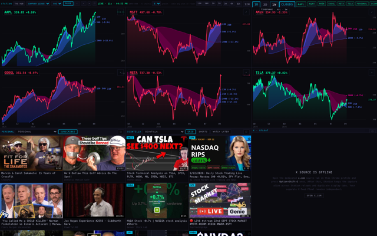
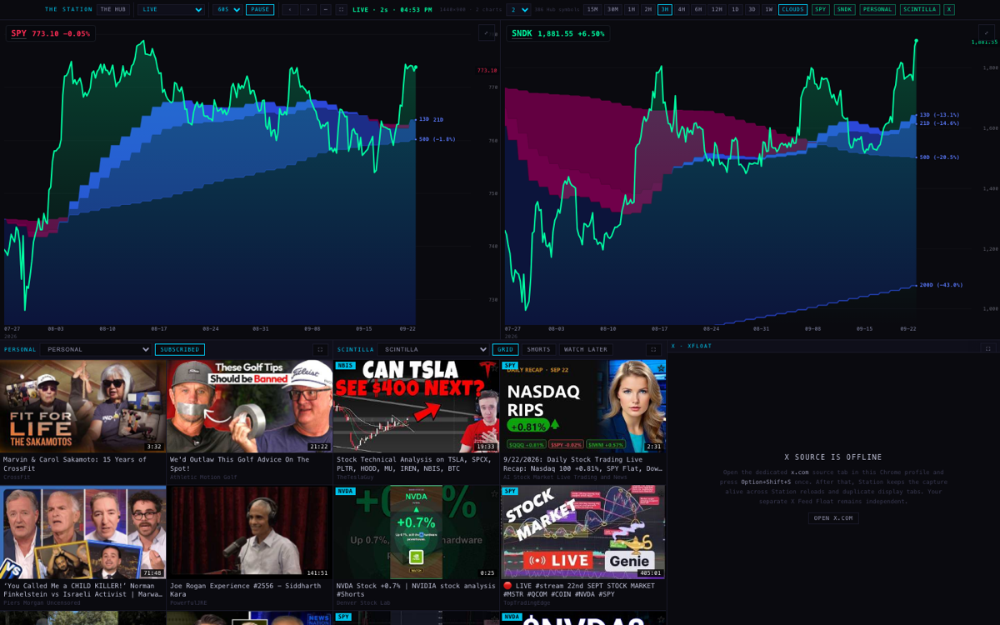
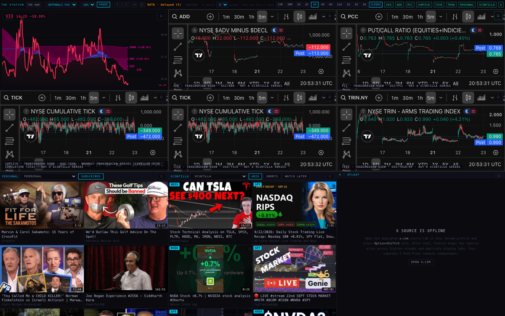
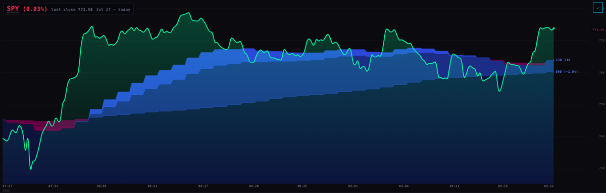
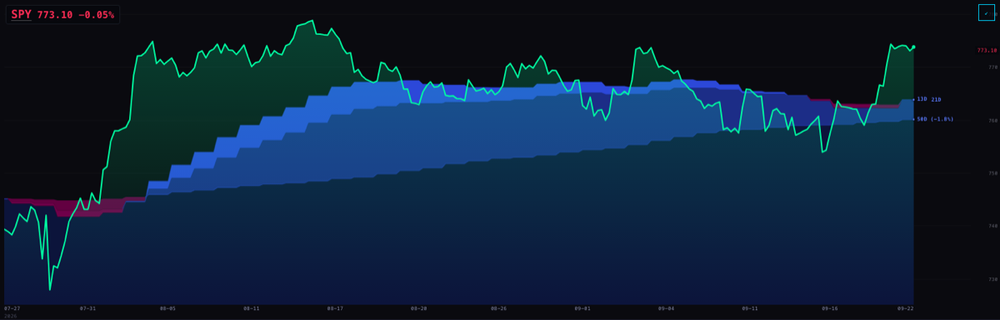
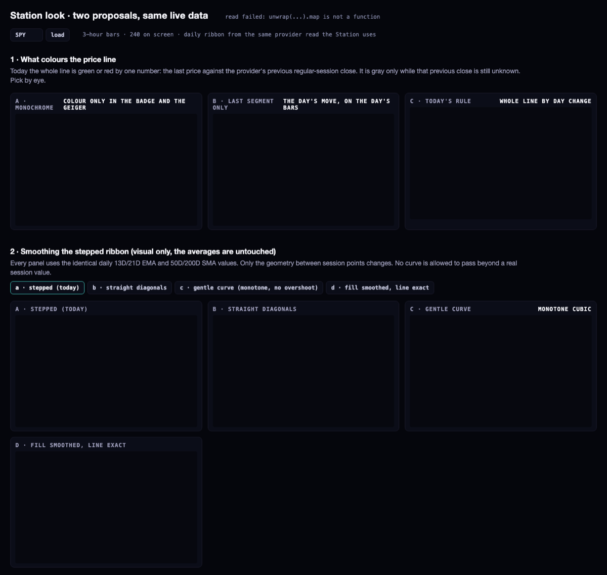

The Station, 22 September: what was slow, what was gray, and what changed
Measured in a real Chromium on the MacBook, five timeframe clicks per setting, medians. The same test ran against the live Station and against the candidate branch station/speed-clouds-20260922. Nothing here is deployed yet.
1 · Why it was slow (the measured cause, not a guess)
Every timeframe click threw away every chart and rebuilt it from scratch. The timeframe was part of each chart's address, so the deck reloaded all six chart frames (six navigations, eighteen script downloads per click) instead of telling them the new timeframe.
After any scene rotation, the rebuilt charts waited 5.5 seconds for a permission that never came. The deck hands out "you may load" slots two at a time and ignores requests tagged with an old generation; a rebuilt chart always carried generation 0, so it was never answered and fell back to its 5.5 s escape hatch. That is the ~6 second wall at six charts, and with rotation on by default it was the normal case.
Gray = "previous close unknown." The line is painted in a light gray (#C6C8DE, which reads as white on the dark wall) until the deck pushes that ticker's previous close. That push only happens on the deck's ten-second quote heartbeat, so a chart that came up between heartbeats sat gray until the next one — longer on a slow machine where the heartbeat itself takes longer.
2 · Two charts (the default scene)
Index-now scene, SPY and SNDK. Cold cache on the first click of each timeframe.
before (live, 22 Sep)
after (candidate)
timeframe click → first chart repainted
853 ms
112 ms
timeframe click → every chart repainted
861 ms
304 ms
slowest of the five
3,044 ms
2,375 ms
longest gray line
0 ms
0 ms
longest white line
0 ms
0 ms
chart iframes reloaded per click
2
0
script files re-downloaded per click
6
0
3 · Six charts (company leadership)
AAPL MSFT AMZN GOOGL META TSLA. Before: every click rebuilt six frames and waited out the 5.5 s timeout. After: the frames stay mounted and change timeframe in place.
before (live, 22 Sep)
after (candidate)
timeframe click → first chart repainted
5,993 ms
111 ms
timeframe click → every chart repainted
6,180 ms
302 ms
slowest of the five
6,662 ms
3,622 ms
longest gray line
0 ms
0 ms
longest white line
0 ms
0 ms
chart iframes reloaded per click
6
0
script files re-downloaded per click
18
0
4 · Six charts with the CPU slowed 4× (stand-in for the iMac)
Chromium's CPU throttle at 4×. The iMac itself was not used for numbers, as instructed; this is the closest honest stand-in on this machine. Before ran with three clicks, after with three.
before (live, 22 Sep)
after (candidate)
timeframe click → first chart repainted
498 ms
111 ms
timeframe click → every chart repainted
807 ms
387 ms
slowest of the five
856 ms
561 ms
longest gray line
0 ms
0 ms
longest white line
0 ms
0 ms
chart iframes reloaded per click
6
0
script files re-downloaded per click
18
0
About the gray rows. On this MacBook the quote read finished within the same second as the click, so the gray line lasted under 20 ms in every "before" run (160 ms once, with the CPU throttled). The seconds-long gray Alan sees is the case this bench cannot stage: a chart that comes up before its quote exists and then waits for the deck's ten-second heartbeat, plus the read time, which is where a slow machine stretches it past 30 s. The candidate removes that wait by construction (immediate quote read on mount, and the chart's own previous-close read after 1.2 s), so it does not depend on the machine being fast.
Eight charts: the deck's chart-count control only takes effect in the custom, live and cohort scenes; the curated scenes are fixed at their own count, so eight was not reachable in this test without inventing a custom board. The mechanism measured at six is the same one at eight.
5 · What a click looks like, frame by frame (six charts, click on "1D")
00033 ms00384 ms00716 ms01047 ms01380 ms01708 ms02039 ms02359 ms

02698 ms03023 ms03356 ms03692 ms04024 ms04381 ms04707 ms05040 ms
Full-size frames and the WebM recordings are in the run's evidence folder (evidence/before-cl/frames, evidence/after-cl/frames, evidence/*/video).
6 · What changed in the code
Timeframe changes happen in place. The deck no longer treats the timeframe as part of a chart's identity; it sends the new range to the mounted chart. No reload, no blank.
The old line stays on screen, dimmed, with "loading 1D" on it, until the new one paints. If the new timeframe is already in the browser's cache it paints instantly.
Load permissions are answered. A chart the deck itself mounted is treated as current whatever generation it booted with. The 5.5 s stall is gone.
Four charts may load at once instead of two.
Gray shortened and re-toned. A chart that mounts before its quote exists now triggers an immediate quote read instead of waiting for the heartbeat, and after 1.2 s without a push it reads its own previous close. While a baseline is genuinely unknown the line uses the palette's dim tone, not the light ink that read as white.
No white anywhere on the chart surface. Audit: the only near-white stroke was that light-ink fallback; it is gone. The remaining "white" in the stylesheet is white-space CSS, not a colour.
Labels: every chart now shows TICKER PRICE ±CHANGE% and nothing else. "Sep 21 close 773.50" and "Jul 27 – today" moved into the hover text.
Expand: the corner button is now ⤢ "expand this chart across the row". The expanded line was drawn through control points (a quadratic curve that never touched the real values and bulged past them when wide); it now passes through every real value.
Internals with no retained series (PCC, TICK, CUMTICK, TRIN, ADD; VIX has a Scintilla series and keeps it) show TradingView's free chart in the pane, captioned "TradingView view · USI:PCC · not a Scintilla series". CUMTICK has no TradingView symbol; the nearest is USI:TICK, which TradingView itself labels "NYSE cumulative tick", and the caption says so.
Rotation is on by default, remembered per browser, with the pause button where it was.
Header: "reset preset", the layout selector (the "auto" that was a build-phase switch), the display-window button and the "screen 9 / 9" text moved behind one "⋯" button. The screen arrows stay. The timeframe bar and the chart count are untouched.
7 · The clouds' lookback, in plain words
On a 3-hour chart the ribbon is built from 400 daily bars (the provider's ceiling), for SPY today that is 19 Feb 2025 → 22 Sep 2026. The first 60 of those (to 15 May 2025) are computed but never drawn, because an exponential average has to start somewhere and the start leaks into the earliest values. Each intraday bar shows the value of the newest session that had completed before that bar's session began; on a daily chart each bar shows its own session. The daily bars are re-read every 30 minutes.
What that means on screen: on 15-minute to 12-hour charts and on the daily chart, every visible bar has a ribbon value — the withheld 60 sessions are far off the left edge. On 3-day and weekly charts the 400-bar ceiling is the limit: 240 weekly bars span about 4.6 years, the ribbon can only reach back about 16 months, so it appears on the right part of the chart only. That is the lookback that shows.
What was not approved and is not changed here: the ribbon's values. They are the same 13D/21D EMA and 50D/200D SMA the Lab approved.
Recommended repair (needs a provider change, not done in this branch): read daily history in pages beyond 400 bars so the warm-up sits off-screen on every timeframe, then draw from the first fully-warmed session. Until then the honest state is: ribbon values are current to the newest completed session; coverage on 3D/1W is partial.
8 · Two proposals for Alan to pick by eye
Both live on one page, same live data in every panel: /proposals/station-look/ (on the candidate; the discussion lane deploys it).
Line colour. Today: the whole line is green or red by one number, the last price against the provider's previous regular-session close. Options side by side: A monochrome (colour only in the badge and the Geiger), B colour only on today's segment, C today's rule.
Ribbon smoothing (visual only). a stepped (today), b straight diagonals between session points, c a gentle monotone curve that cannot overshoot a real value, d fill smoothed while the line stays exact.
9 · Screens from the candidate

Default board: ticker · price · change, ⤢ expand, "⋯" for the relocated controls, rotation on.

Internals scene: TradingView views where the Station holds no series, labelled as such.

Before: expanded chart, curve through control points.

After: expanded chart, line through real values.

The proposals page: line colour A/B/C and ribbon smoothing a/b/c/d on live SPY data.
Not verified here: TradingView's widget inside a headless test browser reports "cannot_get_metainfo"; it needs a real browser session to confirm it draws. Everything else above was measured or screenshotted on the candidate.